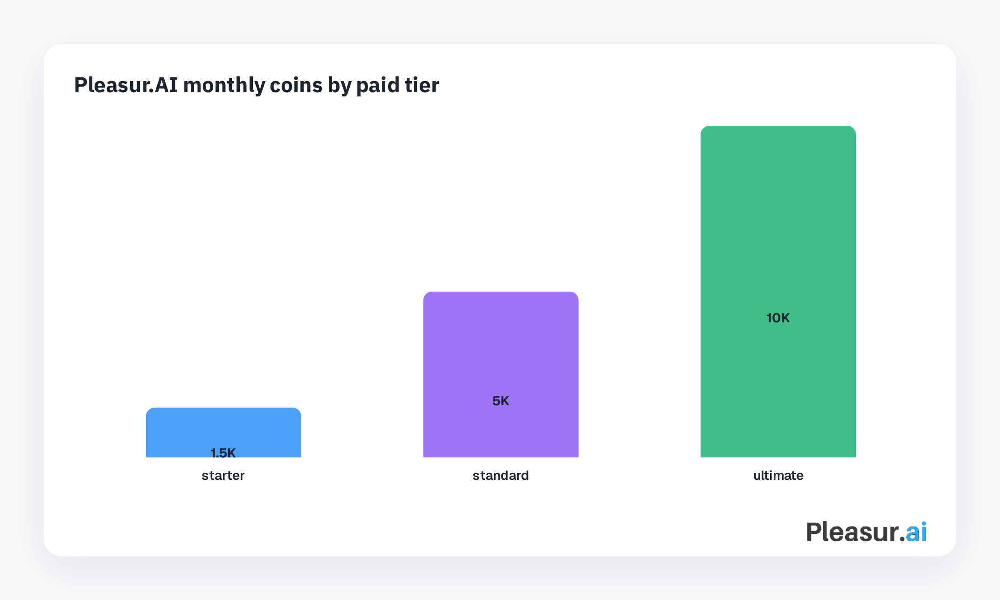
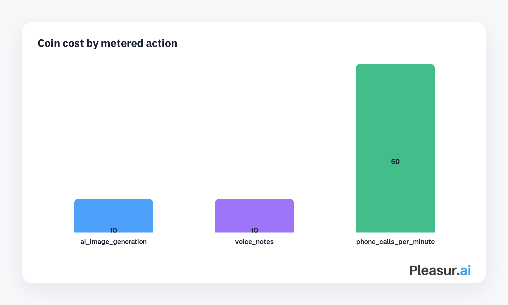
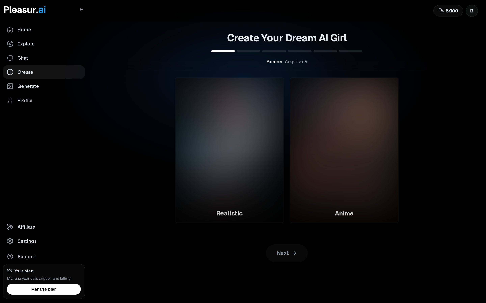
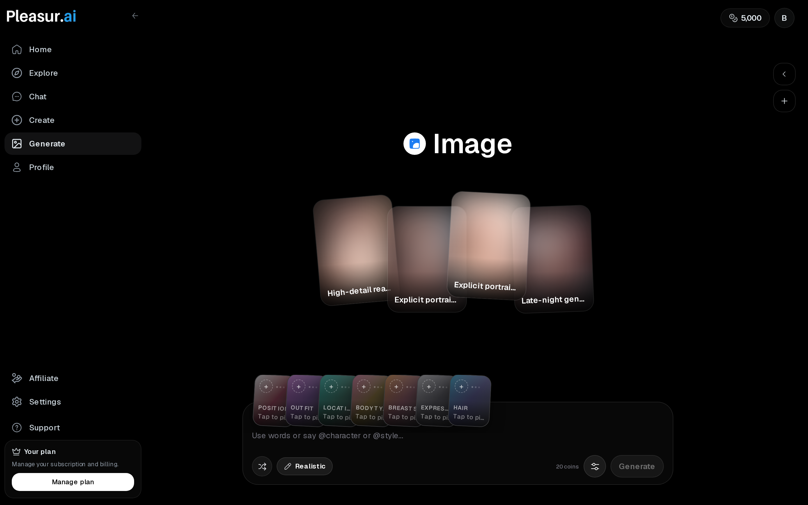
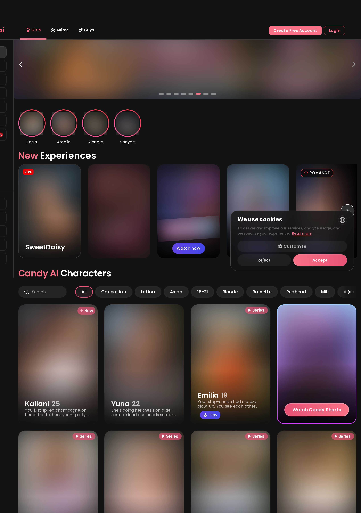
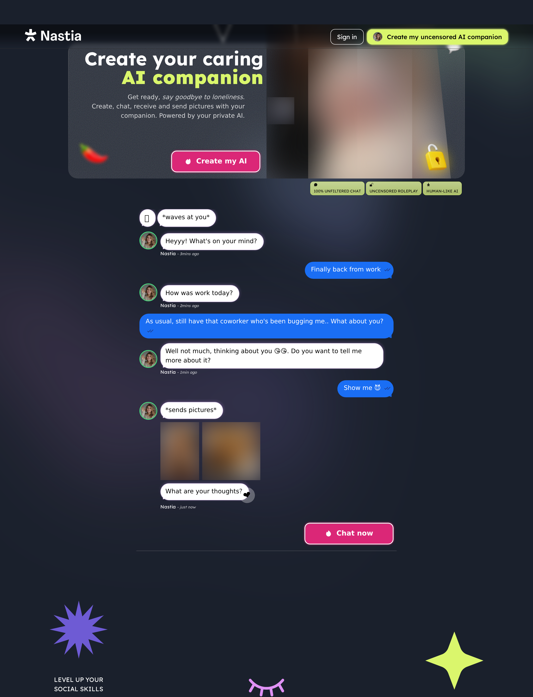
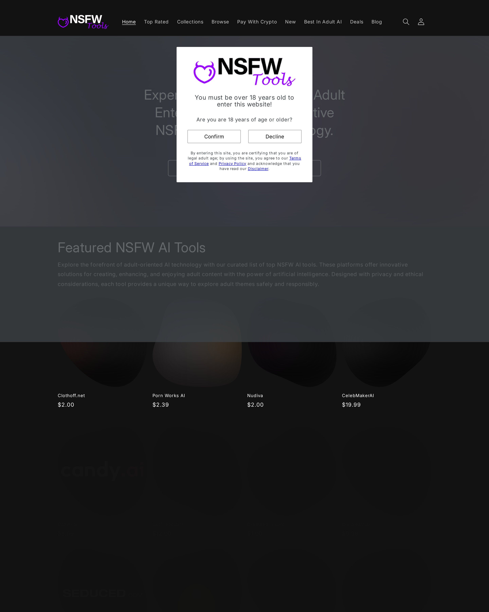

Untitled
NSFW Apps Worth Paying For in 2026
Search for "NSFW apps" and you get a messy pile: AI companions, image generators, tool directories, adult dating apps, mobile porn browsers, and forum threads asking what still works on iPhone. That is why a normal ranked list is not enough. You need a buyer filter.
This guide is for adults comparing paid NSFW apps, especially NSFW AI apps and companion chat products. It is not for bypassing rules, copying real people, or finding "anything goes" tools. The useful question is narrower: which apps are worth money after you test the things that matter?
So, here is the map: first the definition, then a five-check paid-customer filter, then a comparison table and ten apps or categories to compare.
What "NSFW app" means here
In this guide, an NSFW app means an adult-only product that supports consensual adult content or interaction, not a mainstream app with a workaround.
That scope includes AI companion and NSFW chat apps, AI image generators, adult tool directories, dating or social apps, and mobile adult-content browsers. It does not include a general chatbot that sometimes refuses less, or a mainstream character app where users are trying to push the filter until it breaks.
The boundary matters because adult products should say what they allow. A useful NSFW app should make room for fictional adult roleplay or media while rejecting real-person likeness abuse, deepfake framing, illegal content, minors, coercion, and "no rules" marketing.
The word "uncensored" still shows up because people use it to mean "adult-friendly" or "less restricted than mainstream AI." That is understandable. But for a paying customer, fewer refusals are only one part of the decision. You also need memory, media quality, support, cancellation clarity, and a privacy policy you can live with.
🌐 external: Google results for "nsfw apps" showing mixed app categories · manual capture
The paid-customer filter: five checks before you pay
An NSFW app is worth paying for only if it passes five checks: boundaries, memory, media expectations, pricing, and privacy.
This is the filter I would run before subscribing to any adult AI companion, NSFW image tool, or paid adult app:
| Check | What to test | Pass signal | Fail signal |
|---|---|---|---|
| Adult boundaries | Look for 18+ framing, consent language, and forbidden-use rules | The app is adult-oriented but names limits clearly | "No rules," deepfake hints, or real-person likeness prompts |
| Memory/chat quality | Set a fictional 18+ persona, boundary, and scene detail, then change topics | The app remembers the setup and responds in character | It forgets the premise after a few turns |
| Media expectations | Test image, voice, call, or video claims separately | The product shows what is live and what costs extra | Media claims are vague or bundled into one promise |
| Pricing transparency | Find the monthly price, credits/coins, renewals, and per-action costs | You can estimate a normal month before paying | "Unlimited" hides media, call, or fair-use limits |
| Privacy controls | Search policy pages for retention, deletion, training, opt-out, and account deletion | You can find the controls without support roulette | The policy is vague about adult chat or generated media |
- Start with boundaries - if the app sells "no limits" instead of clear adult rules, leave.
- Run the memory test - a companion app with weak recall gets old fast.
- Check the media meter - images, voice notes, and calls often cost more than text.
- Read the privacy policy - adult content makes vague retention language more expensive.
- Subscribe only after the first four pass - the discount can wait.
Here is a concrete way to run the five-minute test. Create or choose a fictional 18+ character. Give the app a preference, a boundary, and a harmless scene detail. Change topics for a few messages. Then ask a follow-up that should reveal whether the app kept the setup.
In Pleasur.AI, the AI Companion Creator is the natural place to run that test: define appearance, personality, backstory, and conversation style, then grade the chat on whether it keeps the fictional setup intact. That does not prove every session will be perfect. It gives you a repeatable baseline.
The same test applies to cost. Pleasur.AI's live pricing page lists Starter, Standard, and Ultimate at $12.99, $27.99, and $49.99 per month, with 1,500, 5,000, and 10,000 monthly coins. AI Image Generation costs 10 coins per image, Voice Replies cost 10 coins per voice note, and Phone Call costs 50 coins per minute.

Now compare allowance with spend.

That is why sticker price alone is a weak filter. A $13 plan can be enough if you mostly chat, but tight if you generate many images or spend time on calls. For broader criteria, use this alongside How to Choose an NSFW AI Companion and the AI Companion Pricing Guide 2026.
Quick comparison: which NSFW apps fit which buyer?
Use this table to narrow the job first, because "NSFW app" is too broad to have one universal winner.
- Pleasur.AI
- Candy AI
- Nastia
- Secrets AI
- Ourdream
- Character and roleplay communities
- NSFW image generators
- NSFW tool directories
- Adult dating and social apps
- Mobile porn and browser apps
| App/category | Best for | Adult boundary posture | Chat/memory | Image/voice/media support | Pricing model | Privacy signal | Buyer-fit verdict |
|---|---|---|---|---|---|---|---|
| Pleasur.AI | Paid adult companion chat with images and voice/calls | Adult-oriented with rules; no real-person/deepfake framing | Strong fit for testing persistent companion setup | Images, voice notes, phone calls; no video claim | Subscription + monthly coins | Check retention/deletion policy before sensitive details | Best fit when companion continuity and transparent coin math matter |
| Candy AI | Polished adult companion UX | Adult-oriented; verify exact limits | Good chat-first comparison candidate | Companion media features to verify by tier | Subscription and/or credits to verify live | Read privacy/training language | Compare if UX polish matters most |
| Nastia | Broad adult companion/media comparison | Marketing may lean permissive; read boundaries carefully | Good adult chat comparison candidate | Chat/media breadth to verify live | Paid companion model | Verify account/data controls | Compare if breadth matters more than restraint |
| Secrets AI | Subscription companion alternative | Adult-oriented to verify from first-party pages | Candidate for roleplay and personalization tests | Media/features to verify live | Subscription | Verify privacy and cancellation flow | Compare as a paid companion peer |
| Ourdream | AI girlfriend/companion UX | Adult-oriented to verify | Candidate for character/chat quality | Media/features to verify live | Subscription | Verify retention/deletion terms | Compare for girlfriend/companion UX |
| Character/roleplay communities | Variety and user-made characters | Community-driven; boundaries vary | Quality depends on bots and creators | Usually chat-first | Free/freemium with limits | Privacy/moderation vary | Useful for variety, weaker paid-buyer clarity |
| NSFW image generators | Adult image output | Must reject real-person/deepfake use | Usually not companion-first | Images are the core feature | Credits/subscriptions common | Check image retention and rights | Use when images matter more than chat |
| NSFW tool directories | Discovery and breadth | Directory does not equal product policy | No native companion quality | Lists many tools | Mixed | Directory privacy is not app privacy | Useful for discovery, not final buying |
| Adult dating/social apps | Real-user social interaction | Consent and moderation are central | Not AI memory products | Social/mobile media features | Subscription/freemium | Strong privacy and moderation checks needed | Different category than AI companions |
| Mobile porn/browser apps | Adult content browsing on phone | Platform and content rules matter | Not companion products | Browsing/player features | Ads/subscriptions | Device tracking checks matter | Off-fit for companion buyers |
The table is a buyer-fit verdict, not legal advice or a safety guarantee. It tells you which category to test next.
The best NSFW apps and categories to compare
The useful shortlist mixes products and categories, because adult companion buyers need to know which options are real alternatives and which ones solve a different job.
Pleasur.AI is the most relevant test case if your main job is companion continuity: create a fictional adult character, chat with them, generate images around that character, and optionally use in-chat audio.

The paid-customer test here is straightforward. Build a character with a defined personality, backstory, boundary, and conversation style. After a few messages, change the topic. Then ask something that depends on the earlier setup. If the app preserves the character and boundary, it passes the first chat-quality screen.
For media, use AI Image Generation as a separate test. Generate a fictional companion image in two styles and compare prompt control, style fit, and whether the result matches the character you meant to create. The important cost detail: images are coin-metered, not unlimited.

Voice belongs in the same chat context. Voice Replies are per-message playback: tap the speaker icon next to a reply. Phone Call starts from the character profile with the Call button. Do not treat either as a separate product, and do not assume video is live.
Test the five-check filter
Build a fictional 18+ companion in Pleasur.AI, then grade the chat, memory, image controls, voice/call costs, and privacy checks before you commit.
Create a companionCandy AI is worth comparing if you care about a polished companion experience more than the deepest testing framework. Run the same memory test: pick one fictional character, set a preference and boundary, change topics, then ask a follow-up that depends on the earlier detail.

The caveat is the usual one for paid companion apps: verify the current price, credit rules, privacy language, and exact content boundaries on Candy AI's own pages before paying. Do not let polished visuals replace the memory and privacy checks.
Nastia belongs on the comparison list because it is a broad adult companion product, and broad products can be attractive if you want chat plus extra media possibilities. But breadth is not the same as paid value.

Test it the same way: one fictional 18+ persona, one boundary, one memory follow-up, one pricing check, one privacy check. If permissive marketing is the main hook, make the product prove quality in the chat, not just in the landing page.
Secrets AI is a paid companion peer, so it is a useful control sample. Do not compare it only on avatar style. Compare how fast you can create a character, how much personality control you get, whether chat quality holds after topic changes, and how cancellation and privacy language read.
Because this is a subscription-style product, your test should include the boring screens too: billing, renewal, account deletion, and support. Those details are not exciting, but they matter more once adult chats and generated media are attached to your account.
Ourdream is another direct comparison point for girlfriend or companion-style NSFW AI apps. The mistake is judging it only by how attractive the first character grid looks. That is the first minute of use, not the first month.
Run the memory test, then add a media test. If the app supports generated images or other media, check whether it keeps a fictional character consistent and whether usage is metered. If the product claims rich companion interaction, ask what happens after the novelty wears off.
Character and roleplay communities are useful when variety matters more than paid-buyer clarity. You can find many bots, niches, writing styles, and user-made characters. That is the upside.
The downside is consistency. Bot quality depends on the creator, moderation varies by community, and privacy can be less clear than in a purpose-built paid companion product. These communities can be fun for sampling ideas, but they are weaker if you want predictable memory, billing, and support.
For the "no filter" angle, read AI Chatbot No Filter: Adult AI Chat Apps Compared (2026). The short version: adult-friendly is useful; no-boundary is not a buying strategy.
NSFW image generators are the right category when the job is images, not companionship. A good test is prompt control, style range, character consistency, edit flow, and cost per generation.
They are not a substitute for a companion app unless chat is also strong. Also, the boundary test is stricter here: avoid real-person likenesses, deepfake framing, non-consensual prompts, and any tool that nudges you toward those use cases.
Directories are discovery surfaces. They help you find categories and names you might not know yet, but they are not the final buyer test.

Directory cards can be out of date, light on privacy detail, or based on product claims. Use them to build a shortlist, then open the app's own site and run the five checks yourself.
Adult dating and social apps solve a different problem from AI companions. You are interacting with real people, so consent, moderation, identity, reporting, and account privacy are the core checks.
Do not compare them to NSFW AI chat apps as if they were the same category. A companion app should be judged on memory, character continuity, fictional setup, and media tools. A dating or social app should be judged on trust, moderation, matching, harassment controls, and payment privacy.
Mobile porn and browser apps are also off-fit for companion buyers. Their job is browsing, playback, privacy controls, and device compatibility, not character memory or AI interaction.
They still show up for "best NSFW apps" because the query is broad. If you only want adult content browsing on iPhone or Android, compare browser privacy, ad load, tracking, content controls, and payment discretion. If you want an AI companion, skip this category and test companion apps directly.
Pricing, coins, and why "free" is usually the wrong filter
Free tiers are useful for testing. They are a poor way to choose a serious NSFW app.
Adult apps often limit the things that make the product feel durable: messages, memory, images, voice, calls, high-quality models, privacy controls, or support. That does not make free bad. It means free should be a trial, not the buying criterion.
The better formula is monthly price + expected images + expected voice notes + expected call minutes + renewal/cancellation risk.
Pleasur.AI is a clean example because the public pricing page separates the moving parts. Free users get 5 messages per day and 2 AI images per month. Subscribers get unlimited messages, but not unlimited coins. AI Image Generation costs 10 coins each, Voice Replies cost 10 coins each, and Phone Call costs 50 coins per minute on supported tiers.
For deeper cost math, use the AI Companion Pricing Guide 2026. The main point here is simpler: free can tell you whether the app deserves a test. It cannot tell you whether the paid version fits your real usage.
Privacy, age gates, and mobile availability
For adult apps, age gates, privacy controls, and device availability are product features, not admin details.
Start with privacy. Before you subscribe, search the privacy policy for retention, deletion, training, opt-out, payment discretion, account deletion, and support access. If you cannot find those answers, assume you will need to be cautious with sensitive details.
Mobile availability is more complicated than "does it have an app?" Apple and Google storefront rules can push adult products toward web apps or browser-first experiences. Apple, for example, publishes app review rules for objectionable and sexual content on its App Store Review Guidelines. That does not mean every adult web app is suspicious. It means iPhone and Android buyers should check the actual access path: native app, mobile web, PWA, login, cancellation, and account deletion.
🌐 external: Google results showing iPhone and app-store availability questions · manual capture
Then check the storefront rule itself.
🌐 external: Apple App Store Review Guidelines safety section · manual capture
Run the same privacy checks on any app you test. For more detail, read What Data Do AI Girlfriend Apps Really Collect? Privacy Guide 2026.
FAQ
What is the best NSFW app overall?
Are free NSFW apps worth using?
Are NSFW apps available on iPhone or Android?
Are NSFW AI apps legal and safe?
What should "uncensored" mean in an adult app?
Which NSFW apps are best for chat vs images vs browsing?
Bottom line
Pay for the NSFW app that passes your five checks, not the one with the loudest "no filter" promise.
- Boundaries first: adult-friendly is useful; "anything goes" is a warning sign.
- Test memory before subscribing: a companion app should preserve a fictional setup across topic changes.
- Do the cost math: messages, images, voice notes, and calls can follow different meters.
If you want a companion-first test case, build a fictional 18+ character in Pleasur.AI and grade it by the same scorecard: adult boundaries, memory, media clarity, pricing, and privacy. Then run the same test on two other apps before paying. The winner is the one that still looks good after the practical checks, not the one with the flashiest first screen.